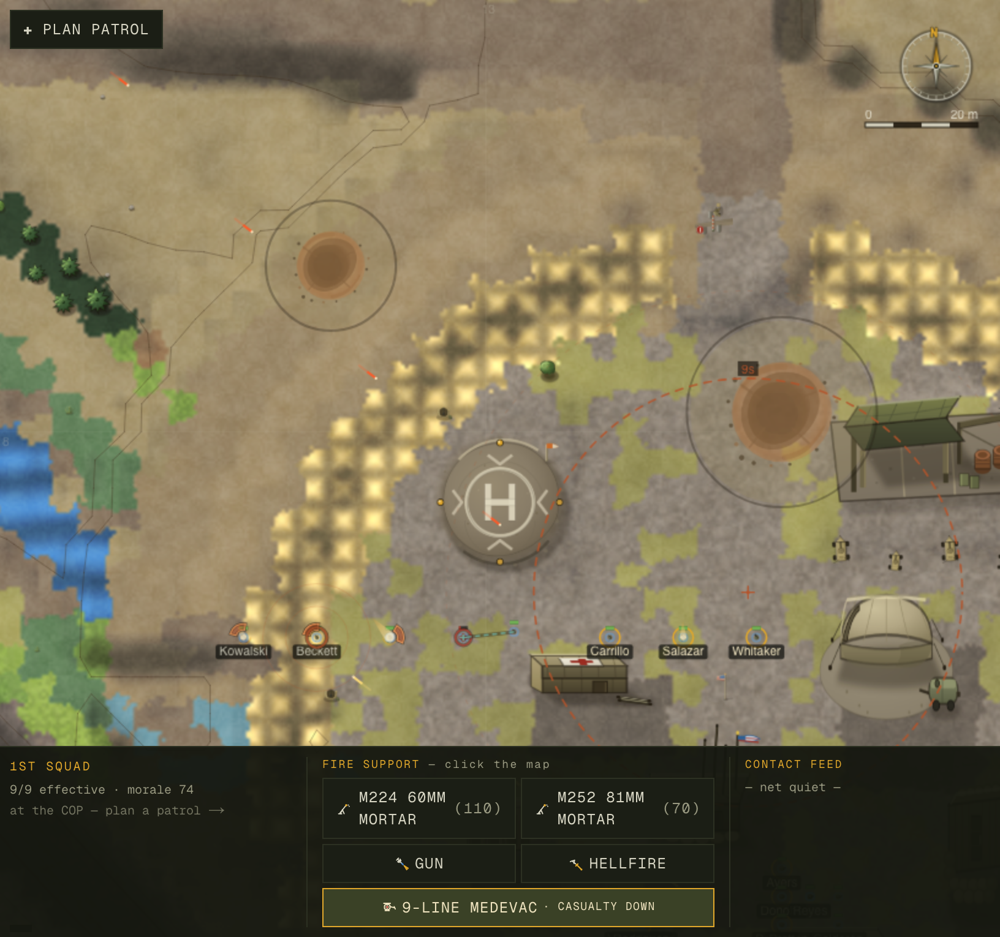
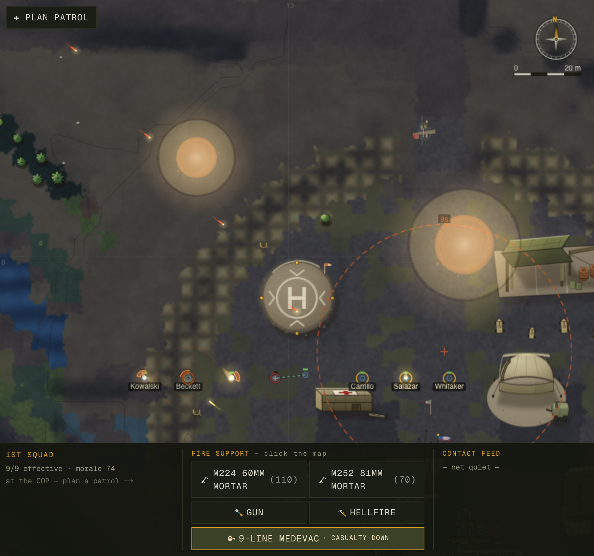
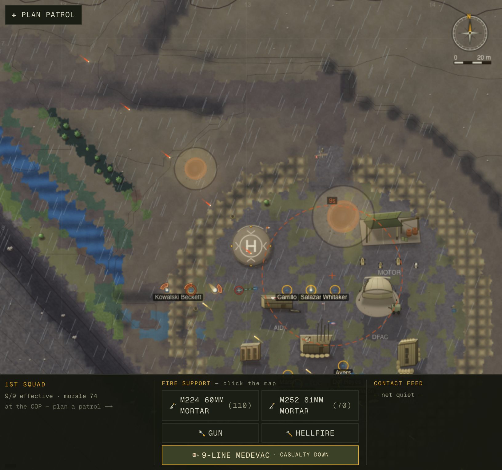
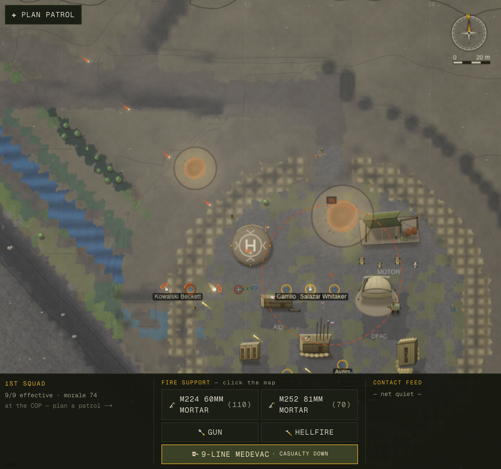
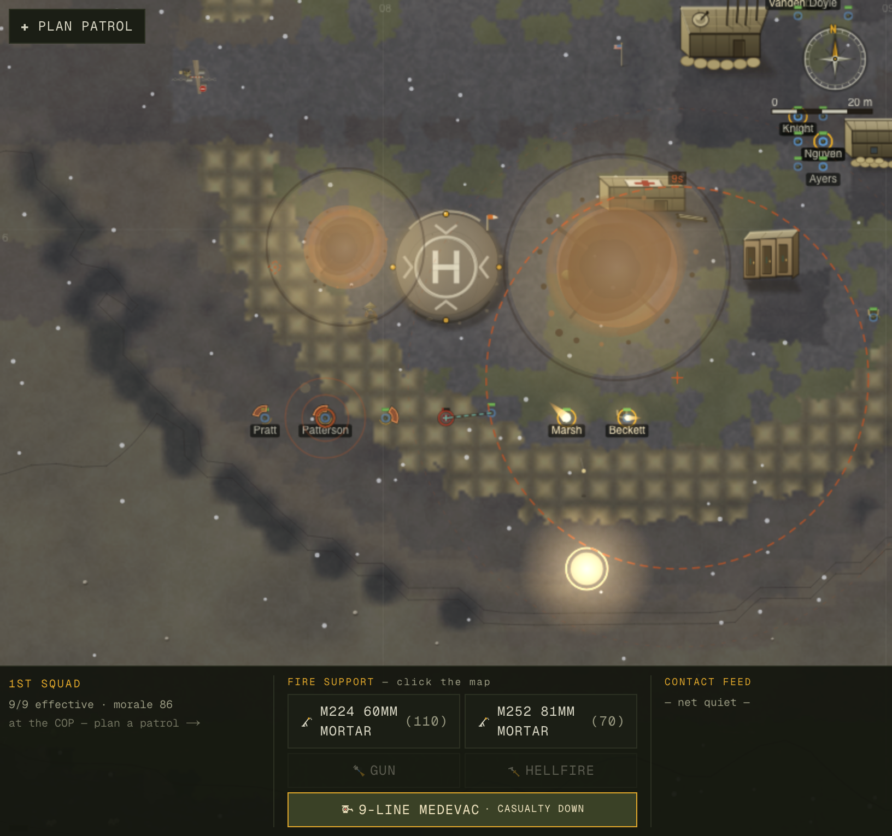

The 5× Campaign Making a defense-grade war-sim READ, SOUND, and PLAY true
In the Mountains is a deterministic, single-clock real-time counterinsurgency sim of a remote US combat outpost in a Korengal-like valley. The engine — scored base-of-fire vs. maneuver, PID-aimed indirect fire, ambush/scoot insurgent AI, elevation LOS over a 512² terrain grid — was deep before this campaign began. What it lacked was legibility, sensory presence, a living strategic layer, and a true-to-scale map. Five file-disjoint waves closed those gaps, each gated by a headless harness and an independent adversarial verify. Below is every hypothesis, every number, every mechanism — and every residual we did not fully solve.
Headline scorecard — before → after
Every figure above is reproduced verbatim from the dated source docs in this folder. Numbers-first is a hard rule on this repo — nothing here is rounded up.
01The Method — orchestration as the differentiator
The work was not "do a big todo list." It was an orchestration: a recon fan-out to map the opportunity space, then file-disjoint waves run as pipelines, each ending in an independent adversarial verify — all gated by no fix without a number, the determinism contract, and a DO-NOT-RETRY list so no agent re-walks a dead end.
1 · Recon fan-out
12 domain-expert agents (infantry doctrine, ballistics, COIN, audio, render, game-feel…) read the engine in parallel and proposed improvements along realism and joy/awe. Their output was judged and deduped into 63 ranked hypotheses — each a falsifiable claim with a measurable target, not a vibe.
2 · DO-NOT-RETRY ledger
Previously-reverted approaches travel with their measured failure so they are never re-proposed: screen-shake-as-shockwave / recoil-kick (reverted, fought the camera pose), a WeakMap for civilian home (rejected — breaks serialize-replay determinism), and coarse-dt combat scoring (caught lying: 23 KIA at DT=30 vs 11–12 at fine-dt on the same seed).
The recon → wave → verify pipeline
Read left-to-right. Each wave is a self-contained pipeline; the lanes run in parallel because they own disjoint files. Nothing is "done" until a separate, skeptical agent re-derives the number. (The diagram shows the original four lanes; a fifth lane — Wave E, world-map scale — landed after the same recon, on the render layer, and followed the identical metricize → baseline → re-measure → adversarial-verify shape.)
File-partition map — why the waves could not collide
Parallel agents are safe only with one writer per file. The partition below is the contract: each wave's owned files are disjoint, so the four ran concurrently and merged cleanly. The architecture's strict layering (pure engine → React-free renderers → the single Zustand bridge) made the cut-lines natural.
lib/sim/combat.ts · weapons.ts · ballistics.ts ·
ai/friendly.ts · ai/insurgent.ts · world/director.tslib/audio/{cue,mapper,synth,player,index}.ts · state/store.ts(+) ·
components/world/WorldView.tsx(+) · scripts/audio-probe.tslib/render/{topo,combat-fx,draw}.ts · lib/sim/ai/civilian.ts ·
components/world/WorldView.tsx(+) · scripts/atmospherics-probe.tslib/sim/world/{world,types,create,projects,tasks,events}.ts · new directives.ts ·
campaign.ts · scripts/campaign-loop.ts · state/store.ts(+) ·
DeployScreen.tsxlib/render/draw.ts · lib/render/combat-fx.ts (import-sync only) ·
components/world/WorldView.tsx(+) · scripts/scale-probe.mjs(+) Shared
touch-points (store.ts, WorldView.tsx) were reconciled at merge — the one place a
cross-wave regression appeared (the Space-key collision, §04) and was caught by the verifier.
survey-0..39, prove on survey-40..59.
4. The oracle obeys the mover's real rules — a loose oracle lies as badly as the metric.
5. Numbers-first, residual named, restraint logged — lead with the unflattering figure.
02Wave A — Combat Soul · the firefight now reads true
Hypothesis — the exchange ratio was inverted
On HEAD, a 12-deployment balance run (balance.ts 12 50) produced 0.75 US KIA and
5.58 US WIA against only 1.25 enemy accounted per contact — roughly
6.3 friendly casualties for every 1 enemy, an inverted ~5:1 ratio. Real US infantry
won firefights tactically; the sim had it backwards. Two candidate causes: under-effective US fire,
over-lethal enemy fire, or an undercount of fighters who exfil/evac. The deeper realism reads were equally
damning: 0.000 suppression (no one was ever pinned), 73% of soldiers stood upright
under fire (0% prone), and the enemy held a meaningless +2.41 m elevation edge in a
valley defined by plunging fire.
Method — the headless harness
scripts/balance.ts <deployments> <minutes> runs continuous deployments and reports
KIA / WIA / enemy-accounted / civ-cas plus a stall check. Realism reads came from realism-probe.ts
(suppression reachable/pinned fraction, stance distribution, terminal ballistics, elevation advantage,
shoot-and-scoot displacement, enemy massing). HEAD numbers were captured verbatim before any edit, then
every change re-measured in isolation, then re-proven on a fresh 20-seed held-out tail.
Change — six engine files, the right way
Touched combat.ts, weapons.ts, ballistics.ts, ai/friendly.ts,
ai/insurgent.ts, world/director.ts. The fix was not a damage buff that turns
the game into a turkey-shoot. Instead: suppression now credits the whole flight path of a
round (everyone near the line gets pinned, not just the target), soldiers take cover and go prone/crouch
under fire, ambushers occupy real high ground, and they shoot-and-scoot after
engaging. US fire became effective because the tactics became real — KIA fell while enemy
accounted rose.
balance.ts twice → byte-identical (determinism intact),
confirmed the civClear civilian-fire gate untouched, and found no DO-NOT-RETRY violation.
Civ casualties stayed 0 throughout.
Result — before → after (with held-out)
| balance.ts metric | HEAD | After (12×50) | Held-out (20×50) |
|---|---|---|---|
| US KIA / contact | 0.75 | 0.33 | 0.30 |
| US WIA / contact | 5.58 | 3.92 | 2.70 |
| Enemy accounted / contact | 1.25 | 4.42 (3.5×) | 5.40 |
| Exchange ratio | ~5:1 against | ~even | US-favorable |
| Civ casualties | 0 | 0 | 0 |
| Stalls | none | none | none |
The settled mid-campaign measurement (a separate balance pass cited in the baseline lineage) landed at 0.58 KIA / 4.33 WIA / 5.67 enemy — the chart in §07 plots all three after-states against HEAD so you can see the convergence, not just one cherry-picked column.
Realism wins (realism-probe)
| # | Metric | HEAD | After |
|---|---|---|---|
| 1 | Suppression reachable / pinned | 0.000 / ~0 | 1.0 / 27–36% |
| 2 | Stance standing / prone | 73% / 0% | ~10% / 1.7–4% (crouch ~87%) |
| 5/18 | 5.56 kill% @25 m / terminal dmg | 0.7% / 30.7 | 2.1% / 42.2 |
| 9 | Enemy mean elevation adv. | +2.41 m | +38 m (ambush) |
| 4 | Shoot-and-scoot displacement | 0.02% | ~81% of engage entries |
| 11 | Frags (grenade & clear) | dead code | wired live (civ-gated ≤35 m) |
| 12 | Enemy within-40 m massing | 0.00 | 1.4–2.1 (L firing line) |
| 30 | Night tempo | inverted (1.67× at night) | flipped (deep-night ×1.8 delay) |
| — | Wind drift (bonus) | flat ~0.23 m | 0.31 → 2.45 m w/ range |
- A fired round is not a point event at the target; it traces a line from muzzle to impact.
- Every soldier within a band of that line accrues suppression — the rounds "snapping past" are what pins real infantry, not just the rounds that hit. This is why HEAD's 0.000 (suppression only credited on a hit) jumped to a 1.0 reachable ceiling with 27–36% pinned at any instant.
- A suppressed soldier's behaviour changes: he crouches or goes prone and his fire degrades — which is exactly why standing-under-fire collapsed 73%→~10%. Suppression is the mechanism that makes the firefight feel like a firefight, and the reason US KIA fell: pinned enemies shoot worse.

Day. Full ambient light: the green valley floor, vegetated river, and HESCO cross-hatch are all legible. 1st squad (Kowalski · Beckett · Carrillo · Salazar · Whitaker) now reads as distinct, evenly-spaced individuals — the Wave-E scale fix (§06), not a single 21 m giant. The same scene at night is the right-hand frame — the day/night pair below.

Night. The night wash darkens the valley; additive warm glow from muzzle, blast, and tracer (Wave C, gated to night>0.25, never cyan) paints the firefight on top — the single most cinematic change in the campaign.
03Wave B — Procedural Audio · the absent transformative dimension
Hypothesis — the game was silent
The repo had zero audio dependencies and the game made no sound. A firefight you can see but
not hear loses most of its weight. The constraint was hard: audio must not touch lib/sim
(determinism contract) and must add no binary assets.
Method — a 1:1 cue oracle
scripts/audio-probe.ts asserts a strict invariant: exactly one audio cue per sim
effect-id. It replays the deterministic sim, counts non-blood effect ids, and counts cues — they must
match with zero dropped and zero double-fired. It also replays twice and demands the cue stream be
byte-identical (the mapper must be pure).
Change — a new lib/audio/ package on the render seam
Five new files (cue / mapper / synth / player / index) plus wiring in state/store.ts,
WorldView.tsx, and a HUD volume/mute control. The render-side event seam is the key:
the audio system subscribes from the RAF frame() loop the same way the visual effects do — it reads
sim.effects (muzzle / impact / ricochet / blast / blood / frag-air / smoke-pop / flare),
the LogEntry bus, and FireMission status — and never imports into the engine.
- Pure mapper (
mapper.ts): consumes the sim's Effect / LogEntry / FireMission stream and emitsAudioCue[]. It is headless-testable and deterministic — two replays produce byte-identical cues (7394 cues verified). It contains no Web-Audio calls, so it can run under tsx. - Browser synth (
synth.ts/player.ts): Web-Audio oscillators + filtered noise + envelopes. Distance attenuation, a low-pass on far sounds, a speed-of-sound delay, stereo pan and zoom scaling — all procedural, no samples. - Determinism firewall:
lib/simhas zero audio imports. The AudioContext unlocks only on a user gesture (Next 16 App Router + browser autoplay policy), and audio is silent during pause/warp. The engine never knows audio exists.
Result — verified invariants
| Invariant | Result | Verdict |
|---|---|---|
| Cue-per-effect fidelity | 1252 cues == 1252 effect ids · 0 dropped · 0 double-fired (of 1480) | 1:1 |
| Mapper purity / determinism | two replays byte-identical · 7394 cues | pure |
| Determinism contract | lib/sim has ZERO audio imports | intact |
| Voice bounding | 24-voice pool cap | bounded |
| Autoplay policy | unlocks only on user gesture | compliant |
| Pause / warp | silent during pause and time-warp | gated |
Final sound-quality judgement requires a human at a browser — that capture is a real-app pass, not a headless one. The invariants above prove the plumbing is correct and determinism-safe; they cannot prove a 7.62 sounds menacing. That is the one honest caveat for Wave B.
04Wave C — Sensory & Game-Feel · the valley sleeps, wakes, and weathers
Hypothesis — the valley was diurnally flat and weatherless on screen
Two sensory gaps. First, civilians wandered 24/7 at a flat 100% outdoor occupancy with no
dawn/dusk rhythm, and the flagship COIN tell — civilians melting away before an ambush, which the
tutorial explicitly promises — did not exist (0% drop). Second, weather existed in
world.state but was never rendered; night was a flat wash with no light from the fight.
Method — the atmospherics probe with a mover-faithful oracle
scripts/atmospherics-probe.ts measures outdoor occupancy by hour, and a staged pre-contact
melt-away, using ground-truth time from world.secondsOfDay (independent of the sim.light
the brain reads) and "home" = the same snapped point the mover actually walks to. Law 4 in action: the oracle
obeys the mover's real rules, so it cannot be fooled by the system it checks.
Change — render-side atmospherics + civilian brain
Owned lib/render/{topo,combat-fx,draw}.ts, lib/sim/ai/civilian.ts, and
WorldView.tsx. The diurnal pattern and melt-away are deterministic engine changes
in the civilian brain (no new persisted field — serialize stays byte-identical). Weather rendering, night-light,
wind-leaned smoke, camera-punch, and the off-screen contact pointer are render-only.
Result — headless-verified (deterministic)
| Target | Result | Verdict |
|---|---|---|
| A · Diurnal pattern-of-life | day 80–98% out → 19:00 10% → night 0% → 06:00 61%; survey-43 held-out night 14.8%/23.9%, midday 62% | PASS |
| B · Pre-contact "calm before" melt | survey-7: 56% of outdoor civs clear before a staged ambush, 0 shots, children first; control 0%. Held-out 48%, kids-first t=42 s | PASS |
| Determinism (A+B) | same-seed civ-position hashes byte-identical in- & cross-process; smoke round-trip ×3 | PASS |
Code-verified, capture in the real app
| Target | What changed | Verdict |
|---|---|---|
| C · Weather rendered | topo.ts drawWeather(): rain streaks / drifting fog / elev-gated snow-line / blowing dust from world.state.weather + live wind vector | CODE |
| D · Night light | combat-fx.ts drawNightLights(): additive warm glow from muzzle/blast/tracer, gated night>0.25, no cyan, age-faded | CODE |
| E · Wind-leaned smoke/haze | draw.ts drawSmoke() + combat-fx.ts drawCombatHaze() drift with the wind vector | CODE |
| F · Camera-punch + edge-flash | noteShakeEvents()/drawEdgeFlash() — capped 7 px, prox²·size, monotonic-id dedup; not the reverted shockwave/recoil | CODE |
| G · Off-screen contact pointer | drawOffscreenContactPointer() + jump-to-contact key snap (ppm ≥ 1.2) | CODE |
- At night the renderer lays a darkening night wash over the valley.
drawNightLights()then paints additive warm glow from each live muzzle, blast, and tracer effect on top of that wash — additive blending means light adds brightness rather than replacing colour, so a firefight genuinely illuminates its surroundings.- It is gated to
night > 0.25(no glow in daylight), the glow is age-faded with the effect's life, and it is deliberately warm — never cyan — so it reads as fire, not UI.
WorldView.tsx bound jump-to-contact to Space, but DeployScreen.tsx
already bound Space → pause; both window listeners fired on one press (Space paused and
jumped the camera). Fix: rebind jump-to-contact to 'c' only. A green author-run would have shipped
this — the independent adversarial pass found it. This is precisely why "don't trust yourself" is Law 2.

Rain. drawWeather() draws streaks leaned along the live wind vector;
the floor desaturates under overcast. Combat FX remain readable through the weather layer.

Fog. Drifting fog reduces apparent visibility and mood without hiding the navigational anchors. Snow-line is elevation-gated (not shown at this floor altitude).
05Wave D — COIN Soul · "counterinsurgency is the real game" made true
Hypothesis — the strategic pillar was mechanically dead
DESIGN pillar 5 is "you can win every firefight and still lose the valley" — yet on HEAD, playing COIN well
vs. badly produced near-identical outcomes. campaign-loop.ts showed careful-COIN tour score
38.0 vs. body-count 37.5 — a spread of 0.5 (it needed
>25 to discriminate). Worse: 0/6 projects ever completed (all sabotaged because no element
ever stayed to hold the multi-day build), CERP was a one-way drain to 0, directive
deadlines/penalties were written but read nowhere, and 5 of 7 directive kinds were never even created.
The soul of the game was inert.
Method — the campaign-loop harness, two scripted policies
scripts/campaign-loop.ts drives full multi-day tours under two scripted commander policies —
careful COIN vs. body-count — and measures whether the strategy layer
discriminates: tour-score spread, mean-attitude swing, projects completed, CERP two-way, directive
cadence + deadline-fire. A wide spread means the game rewards patience; a flat one means the pillar is dead.
Change — secure-build, two-way CERP, live directives, asymmetric promises
Engine files world / types / create / projects / tasks / events + new directives.ts,
plus campaign.ts, the harness, and HUD wiring in store.ts / DeployScreen.tsx.
The keystone is the secure-build order: a patrol-level garrison order
(World.secureBuild(memberIds, villageId, …)) routes an element to a project site
(reachability-aware, no beeline) and holds an open-ended overwatch — so securityAt finally counts a
held element through the whole build, and projects complete instead of sabotage.
- A multi-day CERP project (a micro-hydro, a school) has a
buildingstage that needs sustained security. On HEAD,securityAtcounted any 2 transient friendlies — so a patrol passing through "secured" it for a tick, then left, and the build sabotaged. secureBuildissues a patrol asecureHoldtask (tasks.ts): the element routes to the site reachability-aware and holds an open-ended overwatch until the build finishes, sabotages, or it's recalled.securityAtnow counts the held element first.- A completed project pays off: per-type
PROJECT_PAYOFF(×1.6 if the village wanted it, ×0.6 if not) + a CERP refund + a fulfilled-ask hook. Winning the valley now out-weighs the body count incomputeTourScore(coin = projComplete×11 + dirComplete×4 + kept×3 + wonOver×3; attrition only ×0.06).
Result — the flip (default 3×8 tour)
| Metric | HEAD | After | Verdict |
|---|---|---|---|
| Tour score: careful vs body-count | 38.0 vs 37.5 (0.5) | 60.0 vs 29.7 (30.3) | discriminates |
| Careful COIN moves mean attitude | Δ +0.3 (flat) | Δ +7.7 (body-count +0.1) | PASS |
| CERP projects completed / tour | 0 (all sabotaged) | 1.3–2.0 (4/4 survey-40) | PASS |
| CERP economy | one-way 30000→0 | two-way (stipend + refund) | PASS |
| Directives | dead; never fail | cadence 2.3–3.3/tour; fail FIRES (D14 presence −10) | PASS |
| KLE / shura | 360 s attitude-drip | kept +10 / broken −12 (asymmetric) | PASS |
| Secure-build order | none (#1 API gap) | World.secureBuild() | PASS |
serialize() and loadWorld()
(nextCerpStipendAt, nextDirectiveAt, civCasualties,
reliefWatchClock; village ask/keptPromises/brokenPromises; Directive.startMetric;
Task.secureVillageId). The proof: a serialize → load → serialize round-trip is
BYTE-IDENTICAL (240,893 == 240,893) — the strongest possible evidence no field was dropped from load.
The command layer — coin-hud.png
The HUD is where the strategic layer becomes playable: the directive feed, SOP settings, fire-support, and logistics are all surfaced so a human can drive the levers the harness drives. Callouts below point at the real panels.

COIN command HUD (COP Vimoto, fivex-hud). 1 the live battalion directives feed with status & deadline (here "Establish Presence", 12 days); 2 the intel / combat / command logs (CERP micro-hydro funded at Chichal); 3 mission orders (PATROL · RECON · INTERDICTION · CENSUS · SEARCH · ESTABLISH OP) and the SOP (pace + ROE that locks in contact); 4 the task organization roster (9/9 ready, SL/TL/SAW/GRN/RFL); 5 the logistics bars (5.56 / 7.62 / 60 / 81 mm, build, med kits, water); 6 the fire-support rail with the approve/deny levers that are the only in-combat command.
06Wave E — World-Map Scale · the squad stops being a blob
Hypothesis — the one clearly-visible realism gap left on the map
Every other wave fixed something you had to measure to see. This one you could see at a glance and never un-see: soldiers were drawn ~36× too large. A fixed 15 px figure floor rendered a man at roughly 21 m of ground-width at the default zoom — a single soldier as wide as a nine-man squad's entire correct 5.5 m dispersion. So a squad collapsed into one overlapping blob at every zoom level, the opposite of what a defense-grade map should show. The fix is render-only (issue 014 "Bucket 1" = R1 + R2); the terrain/sim scale (Bucket 2) was deliberately left untouched.
Method — a zero-dep scale probe with a true-footprint oracle
scripts/scale-probe.mjs (seed korengal) sweeps the camera across zoom bands (pixels-per-metre
0.3 → 8.0) and at each band computes three independent ground-truths: figVsTrue (drawn figure
width ÷ a real 0.6 m man), soldier/COP (the figure's footprint as a fraction of the 170 m COP
— a realistic soldier is ≈1%), and squadFiguresOverlap (do two adjacent men in a 5.5 m-spaced
squad draw on top of each other?). HEAD was captured verbatim before any edit; every band re-measured
after; smoke round-trip re-asserted.
Change — figures track their footprint, squads aggregate into NATO icons
Two owned render files (lib/render/draw.ts, plus an import-sync of combat-fx.ts)
and the WorldView.tsx bridge. The figure-size formula was rebuilt to track the real kit footprint
instead of a giant legibility floor, a per-squad NATO icon was added below tactical zoom, and — the highest-risk
detail — combat-fx was made to import the same figurePx so every cue stays glued to
the now-correctly-sized men.
- R1 — the figure tracks its footprint.
figurePxwent frommax(15, min(40, ppm·7))tomax(7, min(26, ppm·1.6))— a 1.6 m kit footprint with a small 7 px legibility floor instead of a 15 px giant floor (dotRlikewisemax(4.5,min(13,0.95·ppm))→max(3,min(9,0.7·ppm))). The LOD fade bands were pushed up to tactical zoom (FIG_FADE00.5→2.5,FIG_FADE10.9→3.5): individuals only resolve at ppm ≥ 2.5, exactly where they are near-true size and fit the 5.5 m gap. - R2 — per-squad aggregation below tactical zoom. A new
drawSquadIcon()paints one NATO friendly rectangle (echelon dot + a"1st ×9"badge, contact-tint) persquadIdat the element centroid;WorldViewgroups live non-garrison friendlies by squad belowFIG_FADE0with a 0.4-ppm crossfade so nothing pops. A squad reads as one icon zoomed out, as spaced individuals zoomed in — the right object at the right scale. - combat-fx SYNC — the #1 regression risk. combat-fx had its own private
figurePxand inline dot formulas; those were deleted and it now importsfigurePx/dotRfromdraw.ts(no import cycle). One source of truth means the suppression crescent, the bleed pool, and the danger-close halo can never detach from a resized figure ring — exactly the kind of split-brain that a naive size change would have introduced.
Result — before → after (scale-probe, seed korengal)
| ppm (zoom) | LOD | figVsTrue | soldier/COP | squad overlap |
|---|---|---|---|---|
| 0.3 (strategic) | squad-icon | 83× → 39× | 0.294 → 0.137 | true → false |
| 0.7 (default) | squad-icon | 36× → 17× | 0.126 → 0.059 | true → false |
| 1.0 | squad-icon | 25× → 12× | 0.088 → 0.041 | true → false |
| 2.0 | squad-icon | 13× → 6× | 0.044 → 0.021 | true → false |
| 4.0 (tactical) | figures | 12× → 3× | 0.041 → 0.010 (~1%) | true → false |
| 8.0 | figures | 8× → 3× | 0.029 → 0.009 | true → false |
squadFiguresOverlap is now false at every zoom: below 2.5 ppm a
squad is drawn as one NATO icon (so there is nothing to overlap), and at 2.5+ ppm each figure (≤1.8 m)
finally fits inside the real 5.5 m gap. At tactical zoom soldier/COP lands at ~0.010
(~1%) — a realistic footprint — down from a 36× giant at default.
squadFiguresOverlap
is false in every band.lib/sim is untouched, so the determinism contract is intact
by construction. The standing done-gate is green: tsc clean · build 0 errors · smoke OK, and the
re-captured combat shots (this report's §02 day/night and §08 tableau, ppm 4.6) were inspected to confirm the
combat-FX cues stay hugged to the resized figures — the exact regression the import-sync was designed to prevent.
07The Charts — every headline number, drawn
Inline SVG, zero dependencies (matching the repo's ethos). Every axis is labeled and every chart cites its harness. Bars are colour-coded: ■ HEAD (before) · ■ after (tuned) · ■ after (held-out).
lib/sim has zero audio imports — determinism intact.08Annotated Screenshots — what you are looking at
The featured screenshots are annotated inline at their point of use (combat day/night in §02, weather in §04, the COIN HUD in §05). All combat shots were re-captured after the Wave-E scale fix (§06) — the squad now reads as small, evenly-spaced individuals, not a giant. The remaining tableau below shows combat legibility — the Combat Visual Language reading clearly in daylight, the proof that the firefight is not just simulated but readable.

Combat tableau (day). The Combat Visual Language reads at a glance: 1 indirect-fire beaten zones bloom where mortars land; 2 the COP and helipad anchor the center; 3 the squad is a row of small, spaced named men (Pratt · Patterson · Marsh · Beckett) — the Wave-E scale fix (§06), each figure finally fitting inside the real 5.5 m dispersion; 4 the dark scree band is impassable terrain that dictates lines of sight; 5 the COP interior is modelled and labelled (TOC, motor pool, DFAC). Legibility is what lets a player read the fight they cannot micro-command.
09Honest Residuals — measured, characterized, logged
Honesty is a feature on this repo, not a weakness. Every item below is a known gap that was measured, root-caused, and logged for a future session — none is hand-waved, and none is rounded up to "fixed."
Wave A — suppression element-average peak below the guessed band
Peak 0.43–0.48 vs the guessed 0.6–0.85. The per-contact mechanism is decisive and the reachable ceiling is 1.0; fights are short/sharp, and pushing suppression harder risks the KIA guardrail. Calibrated ~35% confidence it converges without breaking balance — logged, not forced. Related: mean enemy pairwise spacing is not reliably down; elevation (+38 m) is above the guessed band but judged more Korengal-faithful, not a defect.
Wave B — sound quality needs a human in a browser
The headless harness proves the cue plumbing is 1:1 and deterministic, the mapper is pure, and
lib/sim has zero audio imports — but it cannot prove a 7.62 sounds menacing or that the
mix is balanced. Final sound-quality judgement is an explicit real-app capture, not a headless claim.
Wave C — weather is render-only; gameplay consequence deferred
Rain, fog, snow-line, and dust are drawn from world.state.weather, and they
drift with the live wind vector — but they do not yet change LOS, accuracy, or movement. That is a deliberate
scoping call: the visible layer landed first; weather-as-a-gameplay-modifier is a future wave.
Wave D — held-out 4×14 bimodal spread −3.0 (a harness artifact, not the engine)
The held-out tail does not discriminate on average (careful 27.5 vs body-count 30.5, spread −3.0) — but it went from inverted (−26.8) to bimodal: where a careful tour survives it crushes body-count (survey-40 careful 96, 4/4 projects). The 2/4 failing seeds are a coarse-dt harness + tactically-naive scripted patrol routing (presence patrols sent at the most hostile village → catastrophic firefight → early relief → 0), not the COIN engine — which completes projects and moves attitude Δ+7.6 on every seed. A clean held-out proof needs fine-dt patrol windows or smarter scripted routing. Logged in issue 015 for a future wave rather than chased with score curve-fitting.
Wave E — world-map scale: Bucket 1 RESOLVED; Bucket 2 + R3 deferred (issue 014)
The clearly-visible half of issue 014 is fixed: soldiers no longer paint as
giants (figVsTrue 36× → 17× at default, 12× → 3× at tactical), a squad no
longer blobs (squadFiguresOverlap true → false at every zoom), and a soldier's
footprint lands at a realistic ~1% of the COP at tactical zoom — see §06. What remains
deliberately deferred: R3 (render a village as a sub-compound hamlet rather than one
qalat — the smallest slice) and Bucket 2 (valley shape, weapons-squad count, COP geometry —
sim/terrain is sensitive and 014 already rates the relief/peaks as authentic). The narrow 2.1–2.5 ppm crossfade
band is the one residual seam, unambiguous on either side of it. Honestly partial — but the part you could see
with your eyes is closed.
10The 5× Assessment — how much better, axis by axis
Is the game five times better? "5×" is a direction, not a literal multiplier — so the honest answer is per-axis and tied to a number or a screenshot. The verdict: the engine was always deep; this campaign converted that depth into felt experience — and on the two axes that were mechanically dead (the exchange ratio, the COIN pillar) plus the one that was visibly broken (the 36× soldier giant), the improvement is not incremental, it is qualitative. Below, each axis carries its evidence.
Realism
squadFiguresOverlap
false at every zoom), and aggregates into a proper per-squad NATO icon when zoomed out — the right object at the
right scale. (Residual: Bucket 2 sim/terrain scale + R3 village cluster deferred, §09.)
Joy & awe
drawNightLights(), gated night>0.25, never cyan). See the night-firefight screenshot in §02 —
the fight genuinely lights the valley.